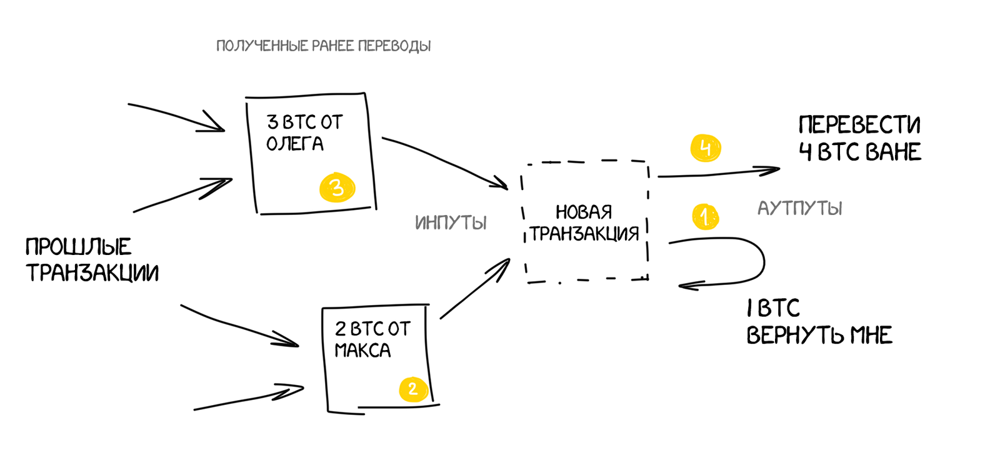

Каждый участник сети еще раз обязательно проверит, что вы не прикрепляли доходы дважды. Что те 300 рублей, что дал Макс на прошлой неделе, вы действительно еще не потратили.
Такие прикрепленные к транзакции доходы в блокчейне называются инпутами (input), а все получатели денег — аутпутами (output). Сумма всех инпутов редко бывает ровно такой, сколько вы хотите перевести за раз — потому один из аутпутов чаще всего будете вы сами. Другими словами транзакция в блокчейне выглядит как «мне дали 3 и 2 BTC, я хочу из них перевести 4 BTC и оставшийся 1 BTC вернуть себе обратно».
